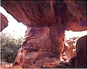
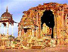
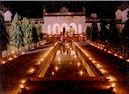

Bhimbetka
Bhojpur
Islam Nagar
Samasgarh
Manua Bhan Ki Tekri
Tourist Office
If you wish to travel further into history -- the pre historic era – take time off to make an excursion to Bhimbetka an archaeological treasure house. BhimbethikaHemmed in by the northern fringe of the vindhya ranges, Bhimbethika : PaintingsBhimbetka lies 46 Kms. South of Bhopal. The rocky terrain of dense forest and craggy cliffs has over 600 shelters belonging to the Neolithic age. They had a vivid, panoramic detail, painting in over 500 caves depicting the lives of pre-historic cave dwellers. This invaluable chronicle on the history of man, should not be missed. You can enjoy the paintings depicting everyday events of our ancestors like scenes of hunting, dancing, horse and elephant riding, household scenes, honey collection, animal fighting scenes etc.
If you wish to travel further into history -- the pre historic era – take time off to make an excursion to Bhimbetka an archaeological treasure house. BhimbethikaHemmed in by the northern fringe of the vindhya ranges, Bhimbethika : PaintingsBhimbetka lies 46 Kms. South of Bhopal. The rocky terThe magnificent temple of Bhojpur , which has earned the nomenclature of the Somnath of the East is known as the Bhojeshwar temple. Dating back to the period of Raja Bhoj, The legendary Parmar king of Dhar , the temple is about 1000 years old. This temple to this date attracts devotees of Lord Shiva in huge numbers during the Shivaratri festivities. Just half – an – Bhojpur Templehour drive from Bhopal, this sanctum has the biggest Shiva Linga carved out of a single stone, rising to an awe-inspiring height of 7.5 feet with a circumference of 17.8 feet. Set upon a massive platform of 21.5 feet, the architectural harmony of lingam and platform creates a superb synthesis of solidity and lightness.
Although the temple was never completed , it still remains one of the best examples of temple architecture of the 12th and 13th centuries.
11km away on Bhopal-Berasia Road has synthesis of Hindu and Islamic decorative art developed by Afghan ruler Dost Mohammed Khan
It is situated 22 kilometer away from Bhopal. This place was discovered 70 years ago by a jain Muni.Hundred of idols of Jain tearthankars can be seen there.
Madhya Pradesh State Tourism Development Corporation Ltd., Paryatan Bhawan, Bhadbhada Road, Bhopal 462 003. INDIA. http://www.mptourism.com Tel.:+91-755-2778383/2774340,42,43,44. Fax: +91-755-2779476/2774289. E-mail: info@mptourism.com
Top